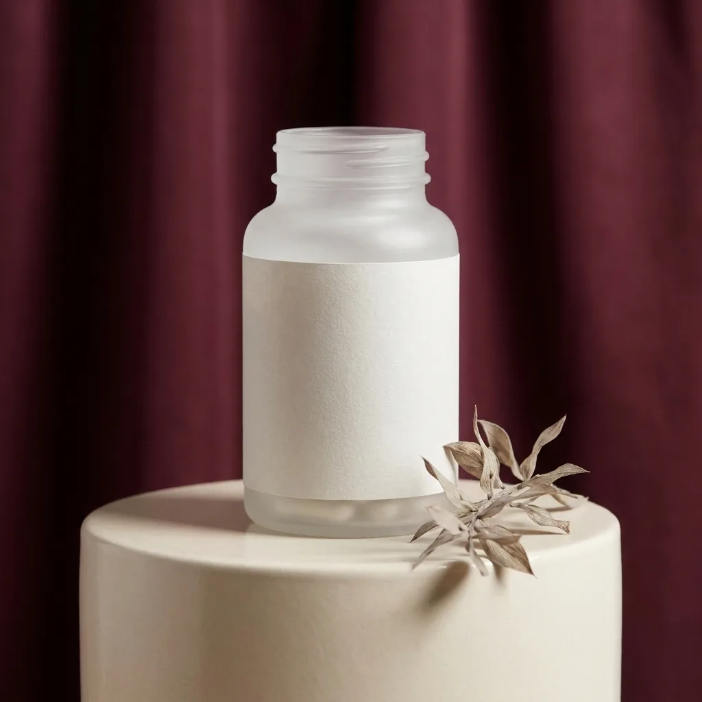
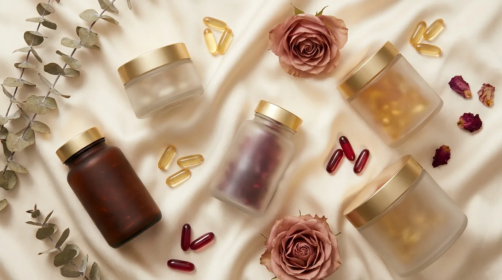
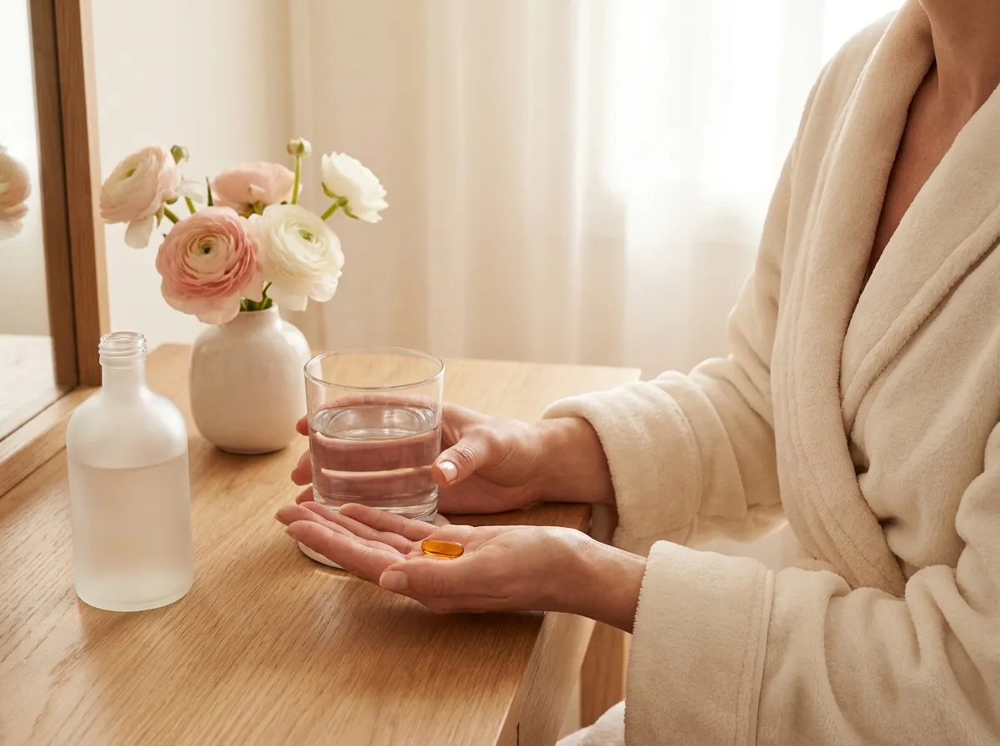
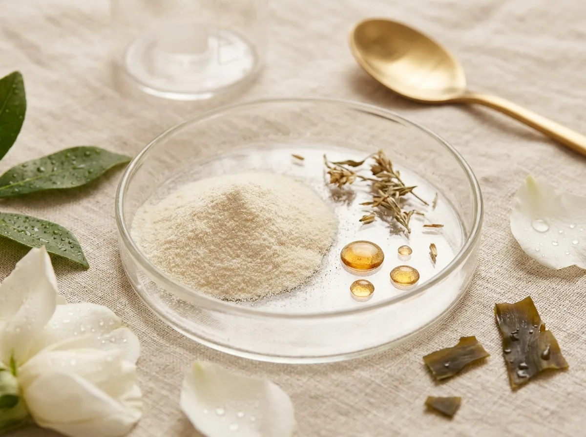
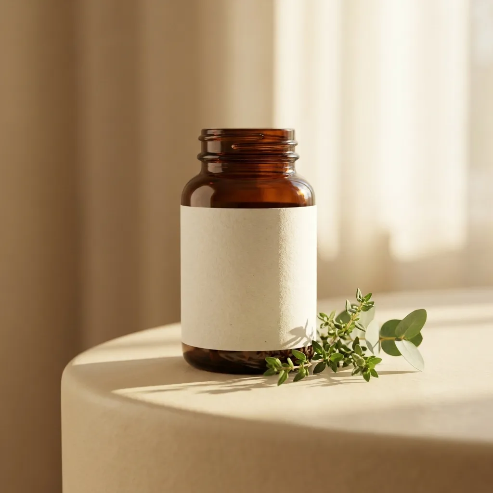
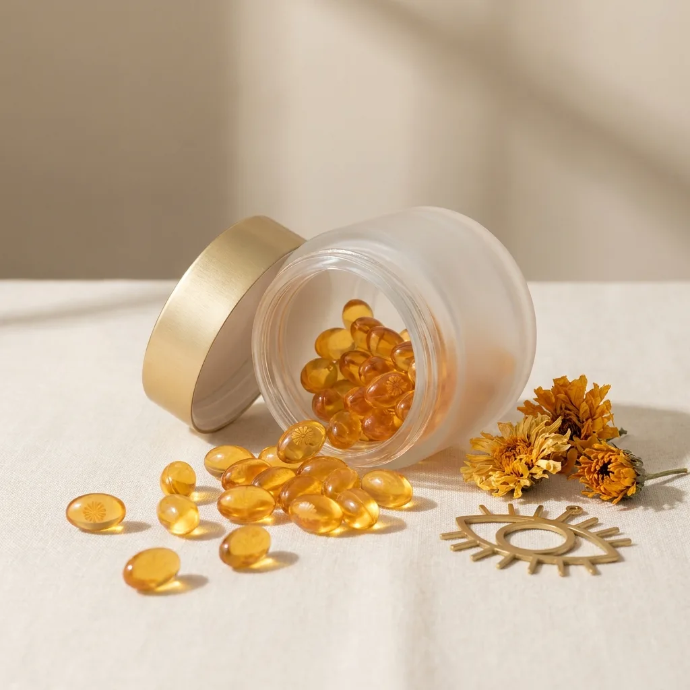

熱銷海洋膠原飲
小分子魚膠原＋維生素 C，由內養出澎潤光感。每盒 30 入。
- 專利小分子膠原
- 添加維生素 C・無腥味
NT$1,280
1

外食、熬夜、加班，膚況與精神總在透支。
保健品買了一堆，卻不知道哪個真的有效、有沒有添加。
想固定保養，卻總是三天打魚、兩天曬網。

選用具專利的原料來源，足量有感，不靠華麗包裝。
每批通過 SGS 重金屬與微生物檢驗，數據公開透明。
不加多餘色素香料，成分單純，吃進去的都看得懂。
單包／單顆設計，隨身好攜帶，把保養變成順手的習慣。

我們相信，真正的保養不是堆疊成分，而是把對的原料用對的劑量做到位。每一支配方，都來自反覆驗證的比例與來源。
「膠原飲喝了兩個月，氣色明顯不一樣，重點是成分乾淨喝得安心。」
「益生菌讓我的腸胃規律很多，包裝好攜帶，出差也不間斷。」
「長時間盯螢幕，葉黃素是我的固定班底，劑量清楚很安心。」
「質感很好，回購很方便。希望之後有更多組合優惠。」
單筆滿 NT$1,200 免運。可調整數量、加入購物車後一次結帳。

熱銷小分子魚膠原＋維生素 C，由內養出澎潤光感。每盒 30 入。

多元菌株＋益生質，調整體質、維持消化道機能。每盒 30 包。

游離型葉黃素＋玉米黃素，給長時間用眼的你清晰日常。每盒 60 顆。
膠原與葉黃素建議隨餐或餐後食用、吸收較佳；益生菌建議空腹或睡前。可依個人作息固定時間養成習慣。
全系列通過第三方 SGS 重金屬與微生物檢驗，並採用具專利的原料來源，成分透明。
保健食品非藥品，孕期、哺乳或有特殊疾病、服藥者，建議先諮詢醫師或藥師後再食用。
全台本島宅配，單筆滿 NT$1,200 免運。未拆封商品於 7 天鑑賞期內可退換（此為示範說明）。
留下你的問題或合作邀約，我們會盡快回覆。此表單為設計示範，不會真的送出或留存資料。